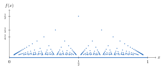

Chapter 6. Functions and Continuity
Chapter 3 defined the limit of a sequence. This chapter defines the limit of a function at a point and uses it to define continuity. The definitions follow the same pattern as before. The number \(\varepsilon\) still says how close the outputs must be. A new number \(\delta\) says how close the inputs must be.
The main results are about continuous functions on a closed and bounded interval \([a,b]\). Such a function takes every value between any two of its values. This is the Intermediate Value Theorem. It has a largest and a smallest value. This is the Extreme Value Theorem. It is also uniformly continuous. Each of these facts uses the completeness of \(\mathbb{R}\), and each fails over \(\mathbb{Q}\). For example, \(f(x)=x^2-2\) is negative at \(0\) and positive at \(2\), but it has no rational zero. The starred Section 6.6 asks which sets can be the set of points where a function is continuous.
6.1 Limits
The limit of \(f\) at \(c\) describes what \(f(x)\) does as \(x\) gets close to \(c\). The value \(f(c)\) plays no role. The function does not even have to be defined at \(c\). This is why the definition uses \(0<|x-c|<\delta\).
Definition 6.1.1. Let \(E\subset \mathbb{R}\) and \(f:E\to\mathbb{R}\). Let \(c\) be a limit point of \(E\). Then \(f\) has a limit of \(L\) at \(c\), denoted \(\lim_{x\to c}f(x)=L\) or \(f(x)\to L\) as \(x\to c\), if for all \(\varepsilon>0\), there exists a \(\delta(c,\varepsilon)>0\) such that for all \(x\in E\) with \(0<|x-c|<\delta\), \(|f(x)-L|<\varepsilon\).
The point \(c\) must be a limit point of \(E\). Then for every \(\delta>0\) there are points \(x\in E\) with \(0<|x-c|<\delta\). Without this, every number \(L\) would satisfy the definition. The notation \(\delta(c,\varepsilon)\) is a reminder that \(\delta\) may depend on both \(c\) and \(\varepsilon\).
Example 6.1.2. The limit \(\lim_{x\to 3}(5x+7)=22\). To show this, let \(\varepsilon>0\). Define \(\delta=\frac{\varepsilon}{5}\). Then for all \(x\in\mathbb{R}\) with \(0<|x-3|<\delta\), \[\begin{aligned} |(5x+7)-22|&=|5x-15|\\ &=5|x-3|\\ &<5\delta=\frac{5\varepsilon}{5}=\varepsilon. \end{aligned}\] So \(5x+7\to 22\) as \(x\to 3\).
Example 6.1.3. The limit \(\lim_{x\to 6}(x^2+2x-7)=41\). To see this, let \(\varepsilon>0\). Define \(\delta=\min\left\{1,\frac{\varepsilon}{15}\right\}\). Then for all \(x\in\mathbb{R}\) with \(0<|x-6|<\delta\), \[\begin{aligned} |(x^2+2x-7)-41|&=|x^2+2x-48|\\ &=|x-6||x+8|\\ &\le 15|x-6|\\ &<15\delta\le\frac{15\varepsilon}{15}=\varepsilon. \end{aligned}\] So \(x^2+2x-7\to 41\) as \(x\to 6\).
Proof Technique (Finding \(\delta\)).
The scratch work for a limit of a function is like the scratch work for a sequence. Start with \(|f(x)-L|\) and pull out a factor of \(|x-c|\). In Example 6.1.2, \(|f(x)-L|=5|x-3|\), so \(\delta=\frac{\varepsilon}{5}\) works. In Example 6.1.3, the other factor \(|x+8|\) depends on \(x\). The trick is to first make sure \(\delta\le1\). Then \(|x-6|<1\), so \(5<x<7\), and \(|x+8|<15\). Now \(|f(x)-L|\le15|x-6|\), and \(\delta\le\frac{\varepsilon}{15}\) finishes the job. Taking \(\delta=\min\left\{1,\frac{\varepsilon}{15}\right\}\) makes both conditions hold at once. Example 6.1.7 shows that \(\delta\le1\) is not always the right first restriction.
Example 6.1.4. The limit \(\lim_{x\to 2}(x^2-7x)=-10\). Let \(\varepsilon>0\). Define \(\delta=\min\left\{1,\frac{\varepsilon}{4}\right\}\). Then for all \(x\in\mathbb{R}\) with \(0<|x-2|<\delta\), \[\begin{aligned} |(x^2-7x)+10|&=|x-2||x-5|\\ &\le 4|x-2|\\ &<4\delta \le\frac{4\varepsilon}{4}=\varepsilon. \end{aligned}\] So \(x^2-7x\to-10\) as \(x\to 2\).
Example 6.1.5. \(\lim_{x\to 7}\frac{1}{x-4}=\frac{1}{3}\). Let \(\varepsilon>0\). Define \(\delta=\min\{1,\varepsilon\}\). Then for all \(x\in\mathbb{R}\setminus\{4\}\) with \(0<|x-7|<\delta\), \[\begin{aligned} \left|\frac{1}{x-4}-\frac{1}{3}\right|&=\left|\frac{3-(x-4)}{3(x-4)}\right|\\ &=\left|\frac{-x+7}{3(x-4)}\right|\\ &=\frac{|x-7|}{3|x-4|}\\ &\le \frac{|x-7|}{6}\\ &<|x-7|<\delta\le \varepsilon. \end{aligned}\] The fourth line holds since \(|x-7|<1\) gives \(x>6\), so \(3|x-4|>6\). So \(\frac{1}{x-4}\to\frac{1}{3}\) as \(x\to 7\).
Example 6.1.6. \(\lim_{x\to2}\frac{x^2-4}{x-2}=4\). Let \(\varepsilon>0\). Define \(\delta=\varepsilon\). Then for all \(x\in\mathbb{R}\setminus\{2\}\) with \(0<|x-2|<\delta\), \[\begin{aligned} \left|\frac{x^2-4}{x-2}-4\right|&=|x+2-4|\\ &=|x-2|<\delta=\varepsilon. \end{aligned}\] So \(\frac{x^2-4}{x-2}\to 4\) as \(x\to 2\).
Proof Technique (Keeping \(\delta\) Away from Trouble).
The next example uses \(\delta=\min\left\{\frac12,\frac{\varepsilon}{10}\right\}\) instead of \(\min\{1,\dots\}\). The first restriction on \(\delta\) has to keep \(x\) away from every point where the other factor is unbounded. Usually that is a point where a denominator is \(0\). In Example 6.1.7, the other factor is \(\frac{|x+1|}{x^2}\), and the trouble is at \(x=0\). The restriction \(\delta\le1\) only gives \(0<x<2\). Then \(x^2\) can be arbitrarily close to \(0\), and \(\frac{|x+1|}{x^2}\) has no upper bound. The restriction \(\delta\le\frac12\) gives \(\frac12<x<\frac32\). Then \(x^2>\frac14\) and \(|x+1|<\frac52\), so the factor is less than \(10\).
A safe rule is to make the first restriction at most half the distance from \(c\) to the nearest trouble point. Here \(c=1\) and the trouble point is \(0\), so \(\frac12\) works. In Example 6.1.5, \(c=7\) and the trouble point is \(4\), so \(\delta\le1\) is already safe. It gives \(6<x<8\) and \(x-4>2\). Exercise 6.1.1 (g) needs the same care, since its denominator is \(0\) at \(x=3\) and \(c=4\).
Example 6.1.7. \(\lim_{x\to 1}\frac{1}{x^2}=1\). Let \(\varepsilon>0\). Define \(\delta=\min\left\{\frac{1}{2},\frac{\varepsilon}{10}\right\}\). Then for all \(x\in\mathbb{R}\setminus\{0\}\) with \(0<|x-1|<\delta\), \[\begin{aligned} \left|\frac{1}{x^2}-1\right|&=\left|\frac{1-x^2}{x^2}\right|\\ &= \frac{|x+1||x-1|}{x^2} \\ &<\frac{\frac52|x-1|}{\frac14}\\ &=10|x-1|\\ &< 10\delta\le10\cdot\frac{\varepsilon}{10}=\varepsilon. \end{aligned}\] The third line holds since \(|x-1|<\frac12\) gives \(\frac12<x<\frac32\), so \(|x+1|<\frac52\) and \(x^2>\frac14\). So \(\frac{1}{x^2}\to 1\) as \(x\to 1\).
Example 6.1.8. \(\lim_{x\to c}x^2=c^2\). Let \(\varepsilon>0\). Define \(\delta=\min\left\{1,\frac{\varepsilon}{2|c|+1}\right\}\). Then for all \(x\) with \(0<|x-c|<\delta\), \[\begin{aligned} |x^2-c^2|&=|x+c||x-c|\\ &\le(|x|+|c|)|x-c|\\ &<(2|c|+1)|x-c|\\ &<(2|c|+1)\delta\le(2|c|+1)\frac{\varepsilon}{2|c|+1}=\varepsilon. \end{aligned}\] The third line holds since \(|x|\le|x-c|+|c|<1+|c|\). So \(x^2\to c^2\) as \(x\to c\).
Example 6.1.9. The function \(f:\mathbb{R}\to\mathbb{R}\) defined by \[f(x)=\begin{cases} 1, & x\in\mathbb{Q}, \\ 0, & x\notin \mathbb{Q}, \end{cases}\] does not have a limit at any point. To show this, start by letting \(c\in\mathbb{R}\). Assume by way of contradiction that \(f(x)\to L\in\mathbb{R}\) as \(x\to c\). Let \(\varepsilon=\frac{1}{2}\). So there exists a \(\delta>0\) such that for all \(x\in\mathbb{R}\) with \(0<|x-c|<\delta\), \(|f(x)-L|<\frac{1}{2}\). Now there exists an \(x_1\in\mathbb{Q}\) and there exists an \(x_2\in\mathbb{R}\setminus\mathbb{Q}\) such that \(x_1,x_2\in(c-\delta,c+\delta)\setminus \{c\}\) by Theorem 1.7.11 and Exercise 1.7.5. Then \[1=|f(x_1)-f(x_2)|=|f(x_1)-L+L-f(x_2)|\le |f(x_1)-L|+|f(x_2)-L|<\frac{1}{2}+\frac{1}{2}=1,\] a contradiction. So \(\lim_{x\to c}f(x)\) does not exist. Since \(c\) was arbitrary, \(\lim_{x\to c}f(x)\) does not exist for all \(c\in\mathbb{R}\). This function is called the Dirichlet function.
Theorem 6.1.10. Let \(E\subset \mathbb{R}\), \(f:E\to\mathbb{R}\), and \(c\) a limit point of \(E\). If \(\lim_{x\to c}f(x)\) exists, it is unique.
Proof. Suppose there exist \(L_1,L_2\in\mathbb{R}\) with \(\lim_{x\to c}f(x)=L_1\) and \(\lim_{x\to c}f(x)=L_2\). Assume by way of contradiction that \(L_1\ne L_2\). Let \(\varepsilon=\frac{|L_1-L_2|}{2}>0\). So there exists a \(\delta_1>0\) such that for all \(x\in E\) with \(0<|x-c|<\delta_1\), \(|f(x)-L_1|<\frac{|L_1-L_2|}{2}\) and there exists a \(\delta_2>0\) such that for all \(x\in E\) with \(0<|x-c|<\delta_2\), \(|f(x)-L_2|<\frac{|L_1-L_2|}{2}\). Since \(c\) is a limit point of \(E\), we can choose \(x_0\in E\) such that \(0<|x_0-c|<\min\{\delta_1,\delta_2\}\). Then \[|L_1-L_2|=|L_1-f(x_0)+f(x_0)-L_2|\le |f(x_0)-L_1|+|f(x_0)-L_2|<\frac{|L_1-L_2|}{2}+\frac{|L_1-L_2|}{2}=|L_1-L_2|,\] a contradiction. So \(L_1=L_2\).
∎
Lemma 6.1.11. Let \(E\subset \mathbb{R}\), \(f:E\to\mathbb{R}\), and \(c\) a limit point of \(E\). Suppose \(\lim_{x\to c}f(x)=L\ne 0\). If \(L>0\), then there exists a \(\delta>0\) such that \(f(x)>\frac{L}{2}>0\) for all \(x\in E\) with \(0<|x-c|<\delta\). If \(L<0\), then there exists a \(\delta>0\) such that \(f(x)<\frac{L}{2}<0\) for all \(x\in E\) with \(0<|x-c|<\delta\).
Proof. See Exercise 6.1.3.
∎
Lemma 6.1.12. Let \(E\subset \mathbb{R}\), \(f:E\to\mathbb{R}\), and \(c\) a limit point of \(E\). Suppose \(\lim_{x\to c}f(x)\) exists. Then there exist \(M>0\) and \(\delta>0\) such that \(|f(x)|\le M\) for all \(x\in E\) with \(0<|x-c|<\delta\).
Proof. See Exercise 6.1.4.
∎
Theorem 6.1.13. Let \(E\subset \mathbb{R}\), \(f,g:E\to\mathbb{R}\), and \(c\) a limit point of \(E\). Suppose \(f(x)\to L_1\) and \(g(x)\to L_2\) as \(x\to c\). Then
\(f(x)+g(x)\to L_1+L_2\) as \(x\to c\);
\(f(x)g(x)\to L_1 L_2\) as \(x\to c\); and
if \(L_2\ne 0\), \(\frac{f(x)}{g(x)}\to \frac{L_1}{L_2}\) as \(x\to c\).
Proof.
Exercise.
Exercise.
By Lemma 6.1.11, there exists a \(\delta_1>0\) such that for all \(x\in E\) with \(0<|x-c|<\delta_1\), \(|g(x)|>\frac{|L_2|}{2}\), and hence, \(\frac{1}{|g(x)|}<\frac{2}{|L_2|}\). In particular, \(g(x)\ne0\), so \(\frac{f(x)}{g(x)}\) is defined for these \(x\). Let \(\varepsilon>0\). So there exists a \(\delta_2>0\) such that for all \(x\in E\) with \(0<|x-c|<\delta_2\), \(|g(x)-L_2|<\frac{|L_2|^2\varepsilon}{2}\). Set \(\delta=\min\{\delta_1,\delta_2\}\). So for all \(x\in E\) with \(0<|x-c|<\delta\), \[\begin{aligned} \left|\frac{1}{g(x)}-\frac{1}{L_2}\right|&=\frac{|g(x)-L_2|}{|g(x)||L_2|}\\ & <\frac{2}{|L_2|}\cdot\frac{1}{|L_2|}\cdot\frac{|L_2|^2}{2}\varepsilon=\varepsilon. \end{aligned}\] So \(\frac{1}{g(x)}\to\frac{1}{L_2}\) as \(x\to c\). Then by (2), \(\frac{f(x)}{g(x)}\to\frac{L_1}{L_2}\) as \(x\to c\).
∎
Corollary 6.1.14. Let \(p(x)\) and \(q(x)\) be polynomials with \(q(c)\ne 0\). Then
\(\lim_{x\to c}p(x)=p(c)\); and
\(\lim_{x\to c}\frac{p(x)}{q(x)}=\frac{p(c)}{q(c)}\).
Proof.
By Exercise 6.1.1, \(\lim_{x\to c}k=k\) for every constant \(k\) and \(\lim_{x\to c}x=c\). Applying Theorem 6.1.13 (2) repeatedly gives \(\lim_{x\to c}x^j=c^j\) for every \(j\in\mathbb{N}\), and then \(\lim_{x\to c}a_jx^j=a_jc^j\) for every \(a_j\in\mathbb{R}\). A polynomial \(p(x)=a_nx^n+\cdots+a_1x+a_0\) is a finite sum of such terms, so (1) follows from Theorem 6.1.13 (1). Part (2) follows from (1) and Theorem 6.1.13 (3).
∎
Theorem 6.1.15. Let \(E\subset \mathbb{R}\), \(f,g:E\to\mathbb{R}\), and \(c\) a limit point of \(E\). Suppose there exists a \(\delta_0>0\) such that \(f(x)\le g(x)\) for all \(x\in E\) with \(0<|x-c|<\delta_0\). Then if \(f(x)\to L_1\) and \(g(x)\to L_2\) as \(x\to c\), \(L_1\le L_2\).
Proof. Assume by way of contradiction that \(L_1>L_2\). Then \(\lim_{x\to c}(f(x)-g(x))=L_1-L_2>0\). So by Lemma 6.1.11, there exists a \(\delta_1>0\) such that \(f(x)-g(x)>\frac{L_1-L_2}{2}>0\) for all \(x\in E\) with \(0<|x-c|<\delta_1\). Since \(c\) is a limit point of \(E\), there exists an \(x\in E\) with \(0<|x-c|<\min\{\delta_0,\delta_1\}\). For this \(x\), \(f(x)\le g(x)\) and \(f(x)>g(x)\), a contradiction.
∎
Theorem 6.1.16 (Squeeze/Sandwich Theorem).
Let \(E\subset \mathbb{R}\), \(f,g,h:E\to\mathbb{R}\), and \(c\) a limit point of \(E\). Suppose there exists a \(\delta_0>0\) such that \(f(x)\le g(x)\le h(x)\) for all \(x\in E\) with \(0<|x-c|<\delta_0\). If \(f(x)\to L\) and \(h(x)\to L\) as \(x\to c\), then \(g(x)\to L\) as \(x\to c\).
Proof. Let \(\varepsilon>0\). Since \(f(x)\to L\) as \(x\to c\), there exists a \(\delta_1>0\) such that for all \(x\in E\) with \(0<|x-c|<\delta_1\), \(|f(x)-L|<\varepsilon\). So for all \(x\in E\) with \(0<|x-c|<\min\{\delta_0,\delta_1\}\), \(-\varepsilon<f(x)-L\le g(x)-L\). Also, since \(h(x)\to L\) as \(x\to c\), there exists a \(\delta_2>0\) such that for all \(x\in E\) with \(0<|x-c|<\delta_2\), \(|h(x)-L|<\varepsilon\). So for all \(x\in E\) with \(0<|x-c|<\min\{\delta_0,\delta_2\}\), \(g(x)-L\le h(x)-L<\varepsilon\). Set \(\delta=\min\{\delta_0,\delta_1,\delta_2\}\). So for all \(x\in E\) with \(0<|x-c|<\delta\), \[-\varepsilon<f(x)-L\le g(x)-L\le h(x)-L<\varepsilon;\] i.e. for all \(x\in E\) with \(0<|x-c|<\delta\), \(|g(x)-L|<\varepsilon\). So \(g(x)\to L\) as \(x\to c\).
∎
Example 6.1.17. The limit \(\lim_{x\to 0}x\sin\frac{1}{x}=0\). To use the Squeeze Theorem, notice for \(x\ne0\), \[-1\le\sin\frac{1}{x}\le1,\] and so \[-|x|\le x\sin\frac{1}{x}\le|x|.\] Now \(-|x|\to 0\) and \(|x|\to 0\) as \(x\to 0\) by Exercise 6.1.1, so by the Squeeze Theorem (Theorem 6.1.16), \(\lim_{x\to 0}x\sin\frac{1}{x}=0\).
Theorem 6.1.18. Let \(E\subset \mathbb{R}\), \(f:E\to\mathbb{R}\), and \(c\) a limit point of \(E\). Then \(\lim_{x\to c}f(x)=L\) if and only if \(\lim_{n\to\infty}f(x_n)=L\) for every sequence \(\{x_n\}\) in \(E\) with \(x_n\ne c\) for all \(n\in\mathbb{N}\) and \(x_n\to c\).
Proof. (\(\Rightarrow\)) Suppose \(\lim_{x\to c}f(x)=L\). Let \(\{x_n\}\) be any sequence in \(E\) with \(x_n\ne c\) for all \(n\in\mathbb{N}\) and \(x_n\to c\). Let \(\varepsilon>0\). Since \(\lim_{x\to c}f(x)=L\), there exists a \(\delta>0\) such that for all \(x\in E\) with \(0<|x-c|<\delta\), \(|f(x)-L|<\varepsilon\). Since \(x_n\to c\), there exists an \(N\in\mathbb{N}\) such that for all \(n\ge N\), \(0<|x_n-c|<\delta\). Thus for all \(n\ge N\), \(|f(x_n)-L|<\varepsilon\). Therefore \(f(x_n)\to L\).
(\(\Leftarrow\)) Conversely, suppose \(f(x_n)\to L\) for every sequence \(\{x_n\}\) in \(E\) with \(x_n\ne c\) for all \(n\in\mathbb{N}\) and \(x_n\to c\). Assume by way of contradiction \(\lim_{x\to c}f(x)\ne L\). Then there exists an \(\varepsilon>0\) such that for all \(\delta>0\), there exists an \(x\in E\) with \(0<|x-c|<\delta\) and \(|f(x)-L|\ge \varepsilon\). For each \(n\in\mathbb{N}\), define \(\delta_n=\frac{1}{n}\). So for all \(n\in \mathbb{N}\), there exists an \(x_n\in E\) with \(0<|x_n-c|<\frac{1}{n}\) and \(|f(x_n)-L|\ge \varepsilon\). Thus \(x_n\to c\) but \(\{f(x_n)\}\) does not converge to \(L\), a contradiction. So \(\lim_{x\to c}f(x)=L\).
∎
Example 6.1.19. Let \(f:\mathbb{R}\setminus\{0\}\to\mathbb{R}\) be defined by \(f(x)=\sin\frac{1}{x}\). Define \(x_n=\frac{2}{(2n-1)\pi}\). Then \(f(x_n)=\sin\frac{(2n-1)\pi}{2}=(-1)^{n+1}\). So \(\{f(x_n)\}\) does not converge. But \(x_n\to 0\). So \(\lim_{x\to 0}\sin\frac{1}{x}\) does not exist.
Proof Technique (Showing a Limit Does Not Exist).
By Theorem 6.1.18, \(\lim_{x\to c}f(x)=L\) means \(f(x_n)\to L\) for every sequence \(\{x_n\}\) in \(E\) with \(x_n\ne c\) and \(x_n\to c\). So to show the limit does not exist, find one such sequence for which \(\{f(x_n)\}\) diverges. Or find two such sequences for which \(\{f(x_n)\}\) has two different limits. Example 6.1.19 uses one sequence. The Dirichlet function in Example 6.1.9 could be handled with two, one of rational numbers and one of irrational numbers.
Definition 6.1.20. Let \(E\subset\mathbb{R}\) and \(f:E\to\mathbb{R}\). Suppose \((c,b)\subset E\) for some \(b>c\). Then \(L\) is the right-hand limit of \(f\) at \(c\), denoted \(\lim_{x\to c^+}f(x)=L\) or \(f(x)\to L\) as \(x\to c^+\), if for all \(\varepsilon>0\), there exists a \(\delta>0\) such that for all \(x\in E\) with \(0<x-c<\delta\), \(|f(x)-L|<\varepsilon\).
Suppose \((a,c)\subset E\) for some \(a<c\). Then \(L\) is the left-hand limit of \(f\) at \(c\), denoted \(\lim_{x\to c^-}f(x)=L\) or \(f(x)\to L\) as \(x\to c^-\), if for all \(\varepsilon>0\), there exists a \(\delta>0\) such that for all \(x\in E\) with \(-\delta<x-c<0\), \(|f(x)-L|<\varepsilon\).
Example 6.1.21. \(\lim_{x\to 0^+}\sqrt{x}=0\) and \(\lim_{x\to 0}\sqrt{x}=0\). The second limit makes sense since the domain of \(\sqrt{x}\) is \(E=[0,\infty)\), and \(0\) is a limit point of \(E\). Only \(x\in E\) count in Definition 6.1.1.
Example 6.1.22. \(\lim_{x\to 5^-} \left\lfloor x\right\rfloor =4\) and \(\lim_{x\to 5^+}\left\lfloor x\right\rfloor =5\).
Theorem 6.1.23. Let \(E\subset \mathbb{R}\), \(f:E\to\mathbb{R}\), and \(c\) a limit point of \(E\). Suppose \((c-r,c)\cup(c,c+r)\subset E\) for some \(r>0\). Then \(\lim_{x\to c}f(x)\) exists and equals \(L\) if and only if \(\lim_{x\to c^-}f(x)=\lim_{x\to c^+} f(x)=L\).
Proof. See Exercise 6.1.8.
∎
Exercises
Exercise 6.1.1. Suppose \(c\) and \(k\) are real numbers. Prove each of the following limits using the \(\varepsilon\)-\(\delta\) definition of limits.
\(\displaystyle\lim_{x\to c} k=k\);
\(\displaystyle\lim_{x\to c} x=c\);
\(\displaystyle\lim_{x\to c} |x|=|c|\);
\(\displaystyle\lim_{x\to c} \sqrt{x}=\sqrt{c}\) for \(c>0\).
\(\displaystyle\lim_{x\to 3}(6x+7)=25\)
\(\displaystyle\lim_{x\to2}(x^2+5x)=14\)
\(\displaystyle\lim_{x\to 4} \frac{1}{x^2+5x-24}=\frac{1}{12}\)
\(\displaystyle\lim_{x\to3}\frac{1}{x-2}=1\)
Exercise 6.1.2. Prove the function \(f:\mathbb{R}\setminus\{0\}\to\mathbb{R}\) defined by \(f(x)=\frac{|x|}{x}\) does not have a limit at \(c=0\).
Exercise 6.1.3. Prove Lemma 6.1.11. [Solution]
Exercise 6.1.4. Prove Lemma 6.1.12.
Exercise 6.1.5. Prove Theorem 6.1.13 (1)–(2). [Solution]
Exercise 6.1.6. Let \(E\subset \mathbb{R}\), \(f:E\to\mathbb{R}\), and \(c\) a limit point of \(E\). Let \(k\in\mathbb{R}\). Prove that if there exists a \(\delta>0\) such that \(f(x)>k\) for all \(x\in E\) with \(0<|x-c|<\delta\), and if \(\lim_{x\to c} f(x)\) exists, then \(\lim_{x\to c} f(x)\geq k\).
Exercise 6.1.7. Prove, using the Squeeze Theorem, that \(\lim_{x\to0}\frac{\sin x}{x}=1\). Use this result to prove \(\lim_{x\to0}\frac{\cos x-1}{x}=0\). [Hint]
Exercise 6.1.8. Prove Theorem 6.1.23. [Solution]
Exercise 6.1.9. Define \(f:\mathbb{R}\to\mathbb{R}\) by \(f(x)=x\) if \(x\in\mathbb{Q}\) and \(f(x)=0\) if \(x\notin\mathbb{Q}\). Prove that \(\lim_{x\to0}f(x)=0\) and that \(\lim_{x\to c}f(x)\) does not exist for every \(c\ne0\). [Hint]
Exercise 6.1.10. Prove that \(\lim_{x\to0}\cos\frac1x\) does not exist. [Hint]
6.2 Infinite Limits and Limits at Infinity
Section 6.1 gives meaning to \(\lim_{x\to c}f(x)=L\) when \(c\) and \(L\) are real numbers. This section allows \(c\) or \(L\) to be \(\infty\) or \(-\infty\). Each definition follows the same pattern. When \(L=\infty\), “within \(\varepsilon\) of \(L\)” becomes “greater than \(M\).” When \(c=\infty\), “within \(\delta\) of \(c\)” becomes “greater than \(d\).” Remember that \(\infty\) and \(-\infty\) are not real numbers (Definition 1.7.6). A statement such as \(\lim_{x\to c}f(x)=\infty\) describes how \(f\) behaves. It does not say the limit exists in the sense of Definition 6.1.1.
Definition 6.2.1. Let \(E\subset \mathbb{R}\), \(f:E\to\mathbb{R}\), and \(c\) a limit point of \(E\). Then \(\lim_{x\to c} f(x)=\infty\) if for all \(M>0\), there exists a \(\delta>0\) such that for all \(x\in E\) with \(0<|x-c|<\delta\), \(f(x)>M\).
\(\lim_{x\to c} f(x)=-\infty\) if for all \(M<0\), there exists a \(\delta>0\) such that for all \(x\in E\) with \(0<|x-c|<\delta\), \(f(x)<M\).
Definition 6.2.2. Let \(E\subset\mathbb{R}\) and \(f:E\to\mathbb{R}\). Suppose \((c,b)\subset E\) for some \(b>c\). Then \(\lim_{x\to c^+}f(x)=\infty\) if for all \(M>0\), there exists a \(\delta>0\) such that for all \(x\in E\) with \(0<x-c<\delta\), \(f(x)>M\). Also, \(\lim_{x\to c^+}f(x)=-\infty\) if for all \(M<0\), there exists a \(\delta>0\) such that for all \(x\in E\) with \(0<x-c<\delta\), \(f(x)<M\). If \((a,c)\subset E\) for some \(a<c\), then \(\lim_{x\to c^-}f(x)=\infty\) and \(\lim_{x\to c^-}f(x)=-\infty\) are defined in the same way, using \(-\delta<x-c<0\).
Example 6.2.3. \(\lim_{x\to 0}\frac{1}{x^2}=\infty\). Let \(M>0\). Choose \(\delta=\frac{1}{\sqrt{M}}\). Then for all \(x\in\mathbb{R}\setminus\{0\}\) with \(0<|x|<\delta\), \[\frac{1}{x^2}>\frac{1}{\delta^2}=\frac{1}{(1/\sqrt{M})^2}=M.\] So \(\lim_{x\to 0}\frac{1}{x^2}=\infty\).
Example 6.2.4. \(\lim_{x\to0^+}\frac1x=\infty\) and \(\lim_{x\to0^-}\frac1x=-\infty\). For the first, let \(M>0\) and choose \(\delta=\frac1M\). Then for all \(x\) with \(0<x<\delta\), \(\frac1x>\frac1\delta=M\). The second is similar. So \(\frac1x\) has neither a limit nor an infinite limit at \(0\).
Definition 6.2.5. Let \(E\subset\mathbb{R}\) and \(f:E\to\mathbb{R}\). Suppose \((a,\infty)\subset E\) for some \(a\in\mathbb{R}\). Then \(\lim_{x\to\infty} f(x)=L\) if for all \(\varepsilon>0\), there exists a \(d>0\) such that for all \(x\in E\) with \(x>d\), \(|f(x)-L|<\varepsilon\).
Suppose \((-\infty,b)\subset E\) for some \(b\in\mathbb{R}\). Then \(\lim_{x\to-\infty} f(x)=L\) if for all \(\varepsilon>0\), there exists a \(d<0\) such that for all \(x\in E\) with \(x<d\), \(|f(x)-L|<\varepsilon\).
Definition 6.2.6. Let \(E\subset\mathbb{R}\) and \(f:E\to\mathbb{R}\). Suppose \((a,\infty)\subset E\) for some \(a\in\mathbb{R}\). Then \(\lim_{x\to\infty}f(x)=\infty\) if for all \(M>0\), there exists a \(d>0\) such that for all \(x\in E\) with \(x>d\), \(f(x)>M\). The statements \(\lim_{x\to\infty}f(x)=-\infty\), \(\lim_{x\to-\infty}f(x)=\infty\) and \(\lim_{x\to-\infty}f(x)=-\infty\) are defined in the same way.
Remark 6.2.7. The limit laws (Theorem 6.1.13), Theorem 6.1.15 and the Squeeze Theorem (Theorem 6.1.16) also hold for one-sided limits and for limits as \(x\to\infty\) or \(x\to-\infty\), when the limits \(L_1\), \(L_2\) and \(L\) are real numbers. The proofs are the same, with \(0<|x-c|<\delta\) replaced by \(0<x-c<\delta\), by \(-\delta<x-c<0\), or by \(x>d\) or \(x<d\).
Theorem 6.2.8. Let \(E\subset\mathbb{R}\) and \(f:E\to\mathbb{R}\). Theorem 6.1.18 remains true in each of these cases.
For a right-hand limit, using sequences in \(E\) with \(x_n>c\) and \(x_n\to c\). For a left-hand limit, using sequences with \(x_n<c\).
When \(L=\infty\) or \(L=-\infty\), where \(f(x_n)\to\pm\infty\) is meant in the sense of Definition 3.6.5.
For limits as \(x\to\infty\) or \(x\to-\infty\), using sequences in \(E\) with \(x_n\to\infty\) or \(x_n\to-\infty\).
Proof.
The proofs follow the proof of Theorem 6.1.18. Here is one case. The others are an exercise. Suppose \((c,b)\subset E\). The claim is that \(\lim_{x\to c^+}f(x)=\infty\) if and only if \(f(x_n)\to\infty\) for every sequence \(\{x_n\}\) in \(E\) with \(x_n>c\) and \(x_n\to c\).
(\(\Rightarrow\)) Let \(\{x_n\}\) be such a sequence and let \(M>0\). Choose \(\delta>0\) such that \(f(x)>M\) for all \(x\in E\) with \(0<x-c<\delta\). Since \(x_n\to c\) and \(x_n>c\), there exists an \(N\in\mathbb{N}\) such that \(0<x_n-c<\delta\) for all \(n\ge N\). So \(f(x_n)>M\) for all \(n\ge N\). Thus \(f(x_n)\to\infty\).
(\(\Leftarrow\)) Suppose \(\lim_{x\to c^+}f(x)\ne\infty\). Negating the definition, there exists an \(M>0\) such that for every \(\delta>0\), there exists an \(x\in E\) with \(0<x-c<\delta\) and \(f(x)\le M\). Taking \(\delta=\frac1n\) gives, for each \(n\in\mathbb{N}\), an \(x_n\in E\) with \(c<x_n<c+\frac1n\) and \(f(x_n)\le M\). Then \(x_n>c\) and \(x_n\to c\), but \(\{f(x_n)\}\) does not diverge to \(\infty\).
∎
Exercises
Exercise 6.2.1. Prove \(\lim_{x\to\infty}\frac{1}{x}=0\). [Solution]
Exercise 6.2.2. Prove that \(\lim_{x\to\infty}x^2=\infty\) and \(\lim_{x\to-\infty}x^3=-\infty\).
Exercise 6.2.3. Prove \(\lim_{x\to\infty}\frac{2x+1}{x+3}=2\). [Hint]
Exercise 6.2.4. Prove the remaining cases of Theorem 6.2.8.
Exercise 6.2.5. Prove that Theorem 6.1.23 holds when \(L=\infty\) or \(L=-\infty\).
6.3 Continuity
In calculus, a function is continuous if its graph can be drawn without lifting the pencil. The definition here says \(f(x)\) is close to \(f(c)\) whenever \(x\) is close to \(c\). The precise definition can behave in ways the pencil picture does not predict. Example 6.3.2 is a function that is continuous at every irrational number and at no rational number.
Definition 6.3.1. Let \(E\subset\mathbb{R}\), \(f:E\to\mathbb{R}\), and \(c\in E\). Suppose \((c-r,c+r)\subset E\) for some \(r>0\). Then \(f\) is continuous at \(c\) if \(\lim_{x\to c}f(x)=f(c)\). If \(f\) is continuous at every point in an interval \(I\subset E\), \(f\) is continuous on \(I\).
Example 6.3.2. The function \(f:(0,1)\to\mathbb{R}\) defined by \[f(x)=\begin{cases} 0, & x\in(0,1)\setminus \mathbb{Q}, \\ \frac{1}{n}, & x\in\mathbb{Q}\cap(0,1)\text{ with }x=\frac{m}{n}\text{ in lowest terms},\end{cases}\] is continuous at every irrational number in \((0,1)\) and is not continuous at any rational number in \((0,1)\). Here \(x=\frac{m}{n}\) in lowest terms means \(n\) is the smallest positive integer such that \(x=\frac{m}{n}\) for some integer \(m\). Such an \(n\) exists by the Well-Ordering Principle.
Let \(c\in(0,1)\). Let \(\varepsilon>0\). Choose \(N\in\mathbb{N}\) with \(N>\frac{1}{\varepsilon}\). There exist only finitely many \(x\in(0,1)\cap \mathbb{Q}\) with \(x=\frac{m}{n}\) in lowest terms and \(n\le N\). For each \(n\le N\), there are at most \(n-1\) of them, namely some of \(\frac1n,\frac2n,\dots,\frac{n-1}{n}\). Denote these rationals by \(r_1,\dots,r_k\). Set \[\delta=\min\{|r_i-c|:i=1,\dots,k,\ r_i\ne c\}.\] (If no \(r_i\) differs from \(c\), let \(\delta=1\).) Then for all \(x\in(0,1)\) with \(0<|x-c|<\delta\), \(f(x)=0\) or \(f(x)=\frac{1}{n}\) with \(n\ge N\). So for \(c\notin \mathbb{Q}\), \(|f(x)-f(c)|=0\) or \(|f(x)-f(c)|=\frac{1}{n}<\varepsilon\). So \(\lim_{x\to c}f(x)=0=f(c)\). So \(f\) is continuous at \(c\). The same argument shows \(\lim_{x\to c}f(x)=0\) for every \(c\in(0,1)\), rational or not. Since \(\lim_{x\to c}f(x)=0\), if \(c\in\mathbb{Q}\), \(\lim_{x\to c}f(x)\ne f(c)\). So \(f\) is not continuous at \(c\).
This function is called Thomae’s function. See Figure 6.1.

Theorem 6.3.3. Let \(E\subset\mathbb{R}\), \(f,g:E\to\mathbb{R}\), and \(c\in E\). Suppose \(f\) and \(g\) are continuous at \(c\). Then the functions \(f+g\), \(fg\), and \(\frac{f}{g}\), if \(g(c)\ne 0\), are continuous at \(c\).
Proof.
This follows from Theorem 6.1.13. For example, \(\lim_{x\to c}(f(x)+g(x))=f(c)+g(c)\), so \(f+g\) is continuous at \(c\).
∎
Theorem 6.3.4. Let \(D,E\subset\mathbb{R}\), \(g:E\to\mathbb{R}\) with \(g[E]\subset D\), \(f:D\to\mathbb{R}\), and \(c\in E\). Suppose \(g\) is continuous at \(c\) and \(f\) is continuous at \(g(c)\). Then \(f\circ g\) is continuous at \(c\).
Proof. Let \(\varepsilon>0\). Because \(\lim_{y\to g(c)}f(y)=f(g(c))\), there exists a \(\delta_1>0\) such that \(|f(y)-f(g(c))|<\varepsilon\) for all \(y\in D\) with \(|y-g(c)|<\delta_1\). Since \(\lim_{x\to c}g(x)=g(c)\), there exists a \(\delta>0\) such that for all \(x\in E\) with \(|x-c|<\delta\), \(|g(x)-g(c)|<\delta_1\). So for all \(x\in E\) with \(|x-c|<\delta\), \(|f(g(x))-f(g(c))|<\varepsilon\).
∎
Definition 6.3.5. Let \(f:[a,b]\to\mathbb{R}\). Then \(f\) is continuous at \(a\) if \(\lim_{x\to a^+}f(x)=f(a)\). Similarly, \(f\) is continuous at \(b\) if \(\lim_{x\to b^-}f(x)=f(b)\).
Definitions 6.3.1 and 6.3.5 cover functions defined on intervals. Later results, such as Theorem 6.4.7, need continuity on other sets. The next definition covers every case at once.
Definition 6.3.6. Let \(E\subset\mathbb{R}\), let \(f:E\to\mathbb{R}\), and let \(c\in E\). Then \(f\) is continuous at \(c\) relative to \(E\) if for all \(\varepsilon>0\), there exists a \(\delta>0\) such that for all \(x\in E\) with \(|x-c|<\delta\), \(|f(x)-f(c)|<\varepsilon\). If \(f\) is continuous relative to \(E\) at every point of \(E\), then \(f\) is continuous on \(E\).
Remark 6.3.7. If \((c-r,c+r)\subset E\) for some \(r>0\), this agrees with Definition 6.3.1. If \(E=[a,b]\) and \(c\) is \(a\) or \(b\), it agrees with Definition 6.3.5. If \(c\) is a limit point of \(E\), then \(f\) is continuous at \(c\) relative to \(E\) if and only if \(\lim_{x\to c}f(x)=f(c)\). If \(c\) is an isolated point of \(E\), every function on \(E\) is continuous at \(c\). There is a \(\delta>0\) such that the only \(x\in E\) with \(|x-c|<\delta\) is \(x=c\). Theorems 6.3.3 and 6.3.4 hold for this definition too, with the same proofs.
Definition 6.3.8. Let \(E\subset\mathbb{R}\). The set of all functions \(f:E\to\mathbb{R}\) that are continuous on \(E\) is denoted \(C(E)\). For intervals, write \(C[a,b]\) for \(C([a,b])\), \(C(a,b)\) for \(C((a,b))\), and so on. By Theorem 6.3.3, if \(f,g\in C(E)\), then \(f+g\in C(E)\) and \(fg\in C(E)\).
Theorem 6.3.9. Let \(E\subset\mathbb{R}\), let \(f:E\to\mathbb{R}\), and let \(c\in E\). Then \(f\) is continuous at \(c\) relative to \(E\) if and only if \(f(x_n)\to f(c)\) for every sequence \(\{x_n\}\) in \(E\) with \(x_n\to c\).
Proof.
(\(\Rightarrow\)) Let \(\{x_n\}\) be a sequence in \(E\) with \(x_n\to c\), and let \(\varepsilon>0\). Choose \(\delta>0\) such that \(|f(x)-f(c)|<\varepsilon\) for all \(x\in E\) with \(|x-c|<\delta\). Since \(x_n\to c\), there exists an \(N\in\mathbb{N}\) such that \(|x_n-c|<\delta\) for all \(n\ge N\). So \(|f(x_n)-f(c)|<\varepsilon\) for all \(n\ge N\). Thus \(f(x_n)\to f(c)\).
(\(\Leftarrow\)) Suppose \(f\) is not continuous at \(c\) relative to \(E\). Then there exists an \(\varepsilon>0\) such that for all \(\delta>0\), there exists an \(x\in E\) with \(|x-c|<\delta\) and \(|f(x)-f(c)|\ge\varepsilon\). Taking \(\delta=\frac1n\), for each \(n\in\mathbb{N}\) there exists an \(x_n\in E\) with \(|x_n-c|<\frac1n\) and \(|f(x_n)-f(c)|\ge\varepsilon\). Then \(x_n\to c\), but \(\{f(x_n)\}\) does not converge to \(f(c)\).
∎
Unlike Theorem 6.1.18, this theorem allows \(x_n=c\). That is because continuity at \(c\) is about \(f(c)\) itself.
Proof Technique (Locating a Point with a Supremum).
To find a point with some property, it often helps to define a set \(S\) of points that are “on one side” and let \(c=\sup S\). Then use the two facts about suprema from Section 1.7. Points of \(S\) come arbitrarily close to \(c\) from the left. Points to the right of \(c\) are not in \(S\). Each fact gives an inequality, and together they pin down \(c\). The proof of the Intermediate Value Theorem below works this way. So did the proof of the Heine–Borel Theorem (Theorem 4.2.14).
Theorem 6.3.10 (Intermediate Value Theorem).
Suppose that \(f:[a,b]\to\mathbb{R}\) is continuous, \(f(a)\ne f(b)\), and \(k\) is any number between \(f(a)\) and \(f(b)\). Then there exists a \(c\in(a,b)\) such that \(f(c)=k\).
Proof. Suppose \(f(a)<k<f(b)\). Define the set \(S=\{x\in[a,b]:f(x)\le k\}\). Then \(a\in S\), so \(S\ne\emptyset\), and since \(S\subset [a,b]\), \(S\) is bounded above. Thus, \(\sup S\in\mathbb{R}\), say \(c=\sup S\).
If \(c=b\), then \(f(c)=f(b)>k\). If \(c<b\), then since \(c\) is an upper bound of \(S\), for all \(x\) with \(c<x\le b\), \(x\notin S\). So for all \(x\) with \(c<x\le b\), \(f(x)>k\). Therefore, \[f(c)=\lim_{x\to c}f(x)=\lim_{x\to c^+}f(x)\ge k\] by Exercise 6.1.6.
Now, since \(c\) is the supremum of \(S\), for all \(n\in\mathbb{N}\), there exists an \(x_n\in S\) with \(c-\frac{1}{n}<x_n\le c\). By the Squeeze Theorem, \(x_n\to c\). Also, \(f(x_n)\le k\) for all \(n\in\mathbb{N}\), since for all \(n\in\mathbb{N}\), \(x_n\in S\). Therefore, \[f(c)=\lim_{n\to \infty}f(x_n)\le k\] by Theorems 6.3.9 and 3.2.7. So \(f(c)=k\). Since \(f(a)<k<f(b)\), \(c\ne a\) and \(c\ne b\). So \(c\in(a,b)\).
Now suppose \(f(b)<k<f(a)\). Define \(g(x)=-f(x)\). Then \(g\) is continuous on \([a,b]\) and \(-f(a)=g(a)<-k<g(b)=-f(b)\). So there exists a \(c\in(a,b)\) such that \(g(c)=-k\). So \(f(c)=k\).
∎
Corollary 6.3.11. If \(I\subset\mathbb{R}\) is an interval and \(f:I\to\mathbb{R}\) is continuous on \(I\), then \(f[I]\) is an interval.
Proof. If \(I\) consists of a single point, \(f[I]\) is a single point and the proof is complete. Assume now there exists \(s,t\in f[I]\) with \(s<t\). Then there exist \(x,y\in I\) with \(f(x)=s\), \(f(y)=t\). Choose \(k\in(s,t)\). Then there exists a \(c\) between \(x\) and \(y\) with \(f(c)=k\) by the Intermediate Value Theorem, applied on the closed interval with endpoints \(x\) and \(y\). This interval is a subset of \(I\), since \(I\) is an interval. So \(k\in f[I]\) and \(f[I]\) is an interval.
∎
Corollary 6.3.12.
If \(f:[0,1]\to[0,1]\) is continuous, there exists a \(c\in[0,1]\) such that \(f(c)=c\).
Proof. Let \(g(x)=f(x)-x\). Then \(g(0)=f(0)\ge 0\) and \(g(1)=f(1)-1\le 0\). Thus there exists a \(c\in[0,1]\) such that \(g(c)=0\); i.e. where \(f(c)=c\). If \(g(0)=0\) or \(g(1)=0\), take \(c=0\) or \(c=1\). Otherwise \(g(1)<0<g(0)\), and the Intermediate Value Theorem gives \(c\).
∎
Definition 6.3.13. Let \(E\subset\mathbb{R}\) and \(f:E\to\mathbb{R}\). Then \(f\) is bounded above on \(E\) if there exists an \(M\in\mathbb{R}\) such that \(f(x)\le M\) for all \(x\in E\). \(f\) is bounded below on \(E\) if there exists an \(M\in\mathbb{R}\) such that \(f(x)\ge M\) for all \(x\in E\). \(f\) is bounded if it is both bounded above and below.
Theorem 6.3.14. Let \(f:[a,b]\to\mathbb{R}\) be continuous. Then \(f\) is bounded on \([a,b]\).
Proof. Assume by way of contradiction that \(f\) is not bounded above on \([a,b]\). Then for all \(n\in\mathbb{N}\), there exists an \(x_n\in[a,b]\) such that \(f(x_n)\ge n\). But \(\{x_n\}\) is contained in \([a,b]\), and so by the Bolzano–Weierstrass Theorem (Corollary 3.4.6), \(\{x_n\}\) has a convergent subsequence, say \(x_{n_k}\to c\in[a,b]\). Then \(\lim_{k\to\infty}f(x_{n_k})=f(c)\) by Theorem 6.3.9, a contradiction. The contradiction is that \(f(x_{n_k})\ge n_k\ge k\) (since \(\{n_k\}\) is a strictly increasing sequence of positive integers), so \(\{f(x_{n_k})\}\) is not bounded, but convergent sequences are bounded by Theorem 3.2.3. So \(f\) is bounded above on \([a,b]\). Similarly, \(f\) is bounded below on \([a,b]\).
∎
Theorem 6.3.15 (Extreme Value Theorem).
Suppose that \(f:[a,b]\to\mathbb{R}\) is continuous. Then \(f\) attains its maximum and minimum values on \([a,b]\); i.e. there exist \(c_1,c_2\in[a,b]\) such that \(f(c_1)\le f(x)\le f(c_2)\) for all \(x\in[a,b]\).
Proof. Let \(W=\{f(x):a\le x\le b\}\). From Theorem 6.3.14, \(W\) is bounded. Also, \(W\ne\emptyset\). So \(\inf W,\sup W\in\mathbb{R}\), say \(\alpha=\inf W\), \(\beta=\sup W\).
Since \(\alpha=\inf W\), for all \(n\in\mathbb{N}\), there exists a \(y_n\in W\) such that \(\alpha\le y_n<\alpha+\frac{1}{n}\). By the way \(W\) is defined, there exists an \(x_n\in[a,b]\) such that \(y_n=f(x_n)\). The sequence \(\{x_n\}\) is contained in \([a,b]\), so it has a convergent subsequence, say \(x_{n_k}\to c_1\in[a,b]\). Since \(f\) is continuous at \(c_1\), \(f(c_1)=\lim_{k\to\infty}f(x_{n_k})\) by Theorem 6.3.9. But for all \(k\in\mathbb{N}\), \[\alpha\le f(x_{n_k})<\alpha+\frac{1}{n_k}\le \alpha+\frac{1}{k}.\] Here \(n_k\ge k\), since \(\{n_k\}\) is a strictly increasing sequence of positive integers. So \(f(c_1)=\alpha\) by the Squeeze Theorem (Theorem 3.2.10). Similarly, there exists a \(c_2\in[a,b]\) with \(f(c_2)=\beta\).
∎
Both hypotheses matter. The function \(f(x)=x\) is continuous on \((0,1)\) but has no largest or smallest value there. The function \(f(x)=\frac1x\) is continuous on \((0,1]\) but is not bounded. The function equal to \(x\) on \([0,1)\) and to \(0\) at \(1\) is bounded on \([0,1]\) but has no largest value.
Continuity can be described using open sets alone, with no \(\varepsilon\) or \(\delta\). This description is the one used in topology, and Part III uses it to define measurable functions.
Theorem 6.3.16. Let \(f:\mathbb{R}\to\mathbb{R}\). Then \(f\) is continuous on \(\mathbb{R}\) if and only if for each open set \(U\subset\mathbb{R}\), \(f^{-1}[U]\) is an open set.
Proof. (\(\Leftarrow\)) Let \(c\in\mathbb{R}\). Let \(\varepsilon>0\). The interval \(I=(f(c)-\varepsilon,f(c)+\varepsilon)\) is open and so \(f^{-1}[I]\) is open. Since \(c\in f^{-1}[I]\) and \(f^{-1}[I]\) is open, there exists a \(\delta>0\) such that \((c-\delta,c+\delta)\subset f^{-1}[I]\). So if \(x\in(c-\delta,c+\delta)\), \(f(x)\in(f(c)-\varepsilon,f(c)+\varepsilon)\); i.e. if \(|x-c|<\delta\), \(|f(x)-f(c)|<\varepsilon\). So \(f\) is continuous at \(c\).
(\(\Rightarrow\)) Suppose \(f\) is continuous and let \(U\subset\mathbb{R}\) be open. Let \(c\in f^{-1}[U]\). Then \(f(c)\in U\) and since \(U\) is open, there exists an \(\varepsilon>0\) such that \((f(c)-\varepsilon,f(c)+\varepsilon)\subset U\). Since \(f\) is continuous at \(c\), there exists a \(\delta>0\) such that for all \(x\) with \(|x-c|<\delta\), \(|f(x)-f(c)|<\varepsilon\). Thus for every \(x\in(c-\delta,c+\delta)\), \(f(x)\in(f(c)-\varepsilon,f(c)+\varepsilon)\subset U\). Hence \((c-\delta,c+\delta)\subset f^{-1}[U]\). So \(f^{-1}[U]\) is open.
∎
Exercises
Exercise 6.3.1. Define \(f:\mathbb{R}\to\mathbb{R}\) by \(f(x)=x\sin\frac1x\) for \(x\ne0\) and \(f(0)=0\). Prove \(f\) is continuous at \(0\). [Hint]
Exercise 6.3.2. Let \(f\) be the function in Exercise 6.1.9. Prove that \(f\) is continuous at \(0\) and at no other point.
Exercise 6.3.3. Prove that the equation \(x^5-3x+1=0\) has a solution in \((0,1)\).
Exercise 6.3.4. Let \(f\) and \(g\) be continuous on \([a,b]\) with \(f(a)<g(a)\) and \(f(b)>g(b)\). Prove there exists a \(c\in(a,b)\) with \(f(c)=g(c)\). [Hint]
Exercise 6.3.5. Let \(f:\mathbb{R}\to\mathbb{R}\) be continuous with \(f(q)=0\) for every \(q\in\mathbb{Q}\). Prove \(f(x)=0\) for every \(x\in\mathbb{R}\). [Hint]
Exercise 6.3.6. Let \(E\subset\mathbb{R}\) and \(f:E\to\mathbb{R}\). Prove that \(f\) is continuous on \(E\) if and only if for each open set \(O\), there is an open set \(U\) such that \(f^{-1}[O]=E\cap U\). (This extends Theorem 6.3.16 to functions on any set \(E\).) [Solution]
6.4 Uniform Continuity
If \(f\) is continuous on \(E\), then for each \(x\in E\) and each \(\varepsilon>0\) there is a \(\delta\). That \(\delta\) may depend on \(x\). Uniform continuity asks for one \(\delta\) that works at every point of \(E\) at once. In symbols, the only change is the order of “for all \(x\)” and “there exists a \(\delta\).”
Definition 6.4.1. Let \(E\subset\mathbb{R}\) and \(f:E\to\mathbb{R}\). \(f\) is uniformly continuous on \(E\) if for all \(\varepsilon>0\), there exists a \(\delta(\varepsilon)>0\) such that for all \(x,y\in E\) with \(|x-y|<\delta\), \(|f(x)-f(y)|<\varepsilon\).
Example 6.4.2. Let \(E\subset\mathbb{R}\) be bounded. Then \(f(x)=x^2\) is uniformly continuous on \(E\). Since \(E\) is bounded, there exists an \(M>0\) such that \(|x|<M\) for all \(x\in E\). Let \(\varepsilon>0\). Define \(\delta=\frac{\varepsilon}{2M}\). Then for all \(x,y\in E\) with \(|x-y|<\delta\), \[|f(x)-f(y)|=|x^2-y^2|=|x+y||x-y|<2M|x-y|<2M\delta=\varepsilon.\]
Example 6.4.3. \(f(x)=\sin x\) is uniformly continuous on \(\mathbb{R}\). Let \(\varepsilon>0\). Define \(\delta=\varepsilon\). Then for all \(x,y\in\mathbb{R}\) with \(|x-y|<\delta\), \[\begin{aligned} |f(x)-f(y)|&=|\sin x- \sin y|\\ &=2\left|\cos\left[\tfrac{1}{2}(x+y)\right]\sin\left[\tfrac{1}{2}(x-y)\right]\right|\\ & \le 2\left|\sin\left[\tfrac{1}{2}(x-y)\right]\right|\\ &\le 2\left|\tfrac{1}{2}(x-y)\right|\\ &=|x-y|<\delta=\varepsilon. \end{aligned}\] This uses the identity \(\sin x-\sin y=2\cos\frac{x+y}{2}\sin\frac{x-y}{2}\) and the inequality \(|\sin t|\le|t|\). See Remark 3.1.1.
Example 6.4.4. The function \(f(x)=\frac{1}{x}\) is not uniformly continuous on \((0,1)\). Assume by way of contradiction that \(f\) is uniformly continuous on \((0,1)\). Let \(\varepsilon=1\). Then there exists a \(\delta>0\) such that for all \(x,y\in (0,1)\) with \(|x-y|<\delta\), \(|f(x)-f(y)|<\varepsilon\). Choose \(N\in\mathbb{N}\) with \(N>\frac{1}{\delta}\) and \(N\ge2\). Define \(x=\frac{1}{N}\), \(y=\frac{1}{N+1}\). Then \[|x-y|=\left|\frac{1}{N}-\frac{1}{N+1}\right|=\frac{1}{N(N+1)}<\frac{1}{N}<\delta,\] but \(|f(x)-f(y)|=|N-(N+1)|=1=\varepsilon\), a contradiction. So \(f\) is not uniformly continuous on \((0,1)\).
Proof Technique (Proving a Function Is Not Uniformly Continuous).
Negate the definition. A function \(f\) is not uniformly continuous on \(E\) if there exists an \(\varepsilon>0\) such that for every \(\delta>0\), there exist \(x,y\in E\) with \(|x-y|<\delta\) and \(|f(x)-f(y)|\ge\varepsilon\). So fix one \(\varepsilon\). Then, for an arbitrary \(\delta\), find two points closer than \(\delta\) whose values are at least \(\varepsilon\) apart. The points usually go where the graph is steepest. In Example 6.4.4, they go near \(0\).
Definition 6.4.5. Let \(E\subset\mathbb{R}\) and \(f:E\to\mathbb{R}\). \(f\) is Lipschitz continuous on \(E\) (or satisfies a Lipschitz condition on \(E\)) if there exists an \(M>0\) such that for all \(x,y\in E\), \(|f(x)-f(y)|\le M|x-y|\).
Theorem 6.4.6. Let \(E\subset\mathbb{R}\) and \(f:E\to\mathbb{R}\). If \(f\) is Lipschitz continuous on \(E\), \(f\) is uniformly continuous on \(E\).
Proof. See Exercise 6.4.3.
∎
Theorem 6.4.7. Let \(K\subset\mathbb{R}\) be compact and \(f:K\to\mathbb{R}\). If \(f\) is continuous on \(K\), \(f\) is uniformly continuous on \(K\).
Proof. Let \(\varepsilon>0\). Since \(f\) is continuous on \(K\), for all \(x\in K\), there exists a \(\delta_x>0\) such that for all \(y\in K\) with \(0<|y-x|<2\delta_x\), \(|f(y)-f(x)|<\frac{\varepsilon}{2}\). The collection \(\{(x-\delta_x,x+\delta_x)\}_{x\in K}\) is an open cover of \(K\). Since \(K\) is compact, there exists \(x_1,\dots,x_n\) such that \(K\subset\bigcup_{i=1}^n(x_i-\delta_{x_i}, x_i+\delta_{x_i})\). Define \(\delta=\min\{\delta_{x_1},\dots,\delta_{x_n}\}>0\). Suppose \(x,y\in K\) with \(|x-y|<\delta\). Since \(x\in K\), there exists an \(x_i\) such that \(x\in(x_i-\delta_{x_i},x_i+\delta_{x_i})\). Since \(|x-y|<\delta\), \(y\in(x_i-2\delta_{x_i},x_i+2\delta_{x_i})\). Indeed, \(|y-x_i|\le|y-x|+|x-x_i|<\delta+\delta_{x_i}\le2\delta_{x_i}\). Then \[|f(x)-f(y)|\le |f(x)-f(x_i)|+|f(y)-f(x_i)|<\frac{\varepsilon}{2}+\frac{\varepsilon}{2}=\varepsilon.\] So \(f\) is uniformly continuous on \(K\).
∎
Corollary 6.4.8. If \(f\) is continuous on \([a,b]\), \(f\) is uniformly continuous on \([a,b]\).
Proof. This is an immediate consequence of Theorem 6.4.7 and the Heine–Borel Theorem (Theorem 4.2.14).
∎
Exercises
Exercise 6.4.1. Let \(a>0\). Prove that \(f(x)=\frac{1}{x}\) is uniformly continuous on \([a,\infty)\). [Solution]
Exercise 6.4.2. Prove \(f(x)=x^2\) is not uniformly continuous on \(\mathbb{R}\). [Solution]
Exercise 6.4.3. Prove Theorem 6.4.6.
Exercise 6.4.4. Prove that \(f(x)=\sqrt{x}\) is uniformly continuous on \([0,\infty)\). Show that \(f\) is not Lipschitz continuous on \([0,1]\). [Hint]
Exercise 6.4.5. Let \(f\) be uniformly continuous on \(E\) and let \(\{x_n\}\) be a Cauchy sequence in \(E\). Prove that \(\{f(x_n)\}\) is a Cauchy sequence. Use this to give another proof that \(\frac1x\) is not uniformly continuous on \((0,1)\). [Hint]
Exercise 6.4.6. Prove that \(f(x)=\sin\frac1x\) is not uniformly continuous on \((0,1)\). [Hint]
6.5 Monotonicity
Monotone functions are simpler than general functions. Their one-sided limits always exist, so the only way they can be discontinuous is to jump. This section shows they can jump at only countably many points. It also shows the inverse of a continuous strictly monotone function is continuous. That gives the continuity of \(\sqrt[n]{x}\) with no extra work.
Definition 6.5.1. Let \(E\subset \mathbb{R}\) and \(f:E\to\mathbb{R}\). Then
\(f\) is increasing on \(E\) if \(f(x)\le f(y)\) for all \(x,y\in E\) with \(x<y\);
\(f\) is strictly increasing on \(E\) if \(f(x)<f(y)\) for all \(x,y\in E\) with \(x<y\);
\(f\) is decreasing on \(E\) if \(f(x)\ge f(y)\) for all \(x,y\in E\) with \(x<y\);
\(f\) is strictly decreasing on \(E\) if \(f(x)> f(y)\) for all \(x,y\in E\) with \(x<y\);
\(f\) is monotone on \(E\) if \(f\) is increasing or decreasing on \(E\); and
\(f\) is strictly monotone on \(E\) if \(f\) is strictly increasing or strictly decreasing on \(E\).
Theorem 6.5.2. Let \(I\subset \mathbb{R}\) be an open interval and \(f:I\to\mathbb{R}\) increasing on \(I\). Then for all \(c\in I\), \(\lim_{x\to c^+}f(x)\) and \(\lim_{x\to c^-}f(x)\) exist and \[\sup\{f(x):x<c,\ x\in I\}=\lim_{x\to c^-}f(x)\le f(c)\le \lim_{x\to c^+} f(x)=\inf\{f(x):x>c,\ x\in I\}.\] Furthermore, if \(c,d\in I\) with \(c<d\), \(\lim_{x\to c^+}f(x)\le\lim_{x\to d^-}f(x)\).
Proof.
Let \(c\in I\) and let \(A=\{f(x):x\in I,\ x<c\}\). Since \(I\) is open, \(A\ne\emptyset\). Since \(f\) is increasing, \(f(c)\) is an upper bound of \(A\). So \(L=\sup A\) exists and \(L\le f(c)\). Let \(\varepsilon>0\). By Theorem 1.7.7, there exists an \(x_0\in I\) with \(x_0<c\) and \(L-\varepsilon<f(x_0)\). Let \(\delta=c-x_0\). If \(c-\delta<x<c\), then \(x\in I\), since \(I\) is an interval. So \(f(x_0)\le f(x)\le L\), and \(L-\varepsilon<f(x)\le L\). Thus \(|f(x)-L|<\varepsilon\). So \(\lim_{x\to c^-}f(x)=L\). The same argument, with infima in place of suprema, shows \(\lim_{x\to c^+}f(x)=\inf\{f(x):x\in I,\ x>c\}\) and that this infimum is at least \(f(c)\).
Now let \(c,d\in I\) with \(c<d\). Every \(x\) with \(c<x<d\) is in \(I\). For such an \(x\), \[\inf\{f(t):t\in I,\ t>c\}\le f(x)\le\sup\{f(t):t\in I,\ t<d\}.\] There is at least one such \(x\). So \(\lim_{x\to c^+}f(x)\le\lim_{x\to d^-}f(x)\).
∎
Corollary 6.5.3. If \(f\) is monotone on an open interval \(I\), then the set of discontinuities of \(f\) is at most countable.
Proof.
If \(f\) is decreasing, then \(-f\) is increasing and has the same points of discontinuity. So assume \(f\) is increasing. For \(c\in I\), write \(f(c^-)=\lim_{x\to c^-}f(x)\) and \(f(c^+)=\lim_{x\to c^+}f(x)\). These exist and \(f(c^-)\le f(c)\le f(c^+)\) by Theorem 6.5.2. If \(f(c^-)=f(c^+)\), then both equal \(f(c)\), and \(\lim_{x\to c}f(x)=f(c)\) by Theorem 6.1.23. So \(f\) is continuous at \(c\).
Let \(E\) be the set of points of \(I\) where \(f\) is discontinuous. For each \(c\in E\), \(f(c^-)<f(c^+)\). By Theorem 1.7.11, choose \(r_c\in\mathbb{Q}\) with \(f(c^-)<r_c<f(c^+)\). If \(c,d\in E\) with \(c<d\), then \[r_c<f(c^+)\le f(d^-)<r_d\] by Theorem 6.5.2. So \(c\mapsto r_c\) is a one-to-one map from \(E\) into \(\mathbb{Q}\). Since \(\mathbb{Q}\) is countable, \(E\) is at most countable by Theorem 2.2.4.
∎
Definition 6.5.4. Let \(E\subset \mathbb{R}\) and \(f:E\to\mathbb{R}\). If \(f\) is one-to-one, define \(f^{-1}\) on \(f[E]\) by \(f^{-1}(y)=x\) if \(f(x)=y\).
Since \(f\) is one-to-one, each \(y\in f[E]\) equals \(f(x)\) for exactly one \(x\). So \(f^{-1}\) is a function. The proof of Theorem 2.1.8 (2) used the same construction. Do not confuse \(f^{-1}(y)\) with the preimage \(f^{-1}[G]\) of Definition 2.1.2, which is defined for every function.
Lemma 6.5.5. If \(f\) is one-to-one, then \(f^{-1}\) is one-to-one.
Proof. See Exercise 6.5.1.
∎
Lemma 6.5.6. Let \(E\subset \mathbb{R}\) and \(f:E\to\mathbb{R}\). If \(f\) is strictly monotone, \(f\) is one-to-one.
Proof. See Exercise 6.5.2.
∎
Theorem 6.5.7. Let \(I\subset \mathbb{R}\) be an interval and \(f:I\to\mathbb{R}\) strictly monotone and continuous on \(I\). Then \(f^{-1}\) is strictly monotone and continuous on \(f[I]=J\).
Proof. Without loss of generality, assume \(f\) is strictly increasing. Since \(f\) is continuous, by Corollary 6.3.11, \(f[I]=J\) is an interval. Furthermore, by Lemma 6.5.6, since \(f\) is strictly increasing, \(f\) is one-to-one. Hence by Lemma 6.5.5, \(f^{-1}\) is one-to-one.
Now suppose \(y_1,y_2\in J\) with \(y_1<y_2\). Then there exists \(x_1,x_2\in I\), \(x_1\ne x_2\) such that \(f(x_1)=y_1\) and \(f(x_2)=y_2\). Since \(f\) is strictly increasing, \(x_1<x_2\). Otherwise \(x_1>x_2\) would give \(y_1>y_2\). Thus \[f^{-1}(y_1)=x_1<x_2=f^{-1}(y_2).\] So \(f^{-1}\) is strictly increasing on \(J\).
Choose \(d\in J\setminus\{\inf J\}\). So there exists an \(c\in I\) with \(f(c)=d\). Also, note \((-\infty,c)\cap I\ne\emptyset\). Otherwise \(c\) would be the smallest element of \(I\), and \(d=f(c)\) would be the smallest element of \(J\). Let \(\varepsilon>0\). Choose \(a\in I\) with \(a<c\). Then \([a,c]\subset I\), since \(I\) is an interval. A \(\delta\) that works for \(\min\{\varepsilon,c-a\}\) also works for \(\varepsilon\). So we may assume \(\varepsilon\le c-a\), and then \(c-\varepsilon\in I\). Define \(\delta_1=f(c)-f(c-\varepsilon)\). Since \(f\) is continuous and strictly increasing, \[f[(c-\varepsilon,c]]=(f(c-\varepsilon),f(c)]=(d-\delta_1,d]\] by Corollary 6.3.11 applied on \([c-\varepsilon,c]\). Thus, since \(f^{-1}\) is strictly increasing, for all \(y\in(d-\delta_1,d)\), \[c-\varepsilon=f^{-1}(d-\delta_1)<f^{-1}(y)<f^{-1}(d)=c.\] Hence for all \(y\in J\) with \(d-\delta_1<y\le d\), \(|f^{-1}(d)-f^{-1}(y)|<\varepsilon\). So \(\lim_{y\to d^-} f^{-1}(y)=f^{-1}(d)\). Notice if \(\sup J\in J\), this implies \(f^{-1}\) is continuous at \(\sup J\). Using a similar argument, for \(d\in J\setminus\{\sup J\}\), there exists a \(\delta_2>0\) such that for all \(y\in J\) with \(d\le y<d+\delta_2\), \(|f^{-1}(d)-f^{-1}(y)|<\varepsilon\). If \(\inf J\in J\), this implies \(f^{-1}\) is continuous at \(\inf J\). Let \(d\in J^\circ\). Set \(\delta=\min\{\delta_1,\delta_2\}\). Then for all \(y\in J\) with \(|y-d|<\delta\), \(|f^{-1}(d)-f^{-1}(y)|<\varepsilon\). So \(f^{-1}\) is continuous at \(d\).
∎
Exercises
Exercise 6.5.1. Prove Lemma 6.5.5. [Solution]
Exercise 6.5.2. Prove Lemma 6.5.6. [Solution]
Exercise 6.5.3. State and prove a version of Theorem 6.5.2 for decreasing functions.
Exercise 6.5.4. Define \(f:\mathbb{R}\to\mathbb{R}\) by \(f(x)=x+\left\lfloor x\right\rfloor\). Prove that \(f\) is strictly increasing on \(\mathbb{R}\) and find every point where \(f\) is discontinuous.
Exercise 6.5.5. Let \(n\in\mathbb{N}\). Use Theorem 6.5.7 to prove that \(f(x)=\sqrt[n]{x}\) is continuous on \([0,\infty)\).
6.6 Where Can a Function Be Continuous?*
Thomae’s function (Example 6.3.2) is continuous at every irrational number and at no rational number. Is there a function that does the reverse, continuous at every rational number and at no irrational number? This section shows the answer is no. The proof uses the Baire Category Theorem, which says \(\mathbb{R}\) cannot be built from countably many “thin” sets. This section can be skipped. Nothing later depends on it.
Definition 6.6.1. A set \(G\subset\mathbb{R}\) is a \(G_\delta\) set if it is the intersection of countably many open sets.
Every open set is a \(G_\delta\) set. So is every closed interval, since \([a,b]=\bigcap_{n=1}^\infty\left(a-\frac1n,b+\frac1n\right)\). The irrational numbers form a \(G_\delta\) set (Exercise 6.6.2). The first theorem says the points where a function is continuous always form a \(G_\delta\) set.
Theorem 6.6.2. Let \(f:\mathbb{R}\to\mathbb{R}\). For \(n\in\mathbb{N}\), let \(U_n\) be the set of \(c\in\mathbb{R}\) for which there is a \(\delta>0\) with \(|f(x)-f(y)|<\frac1n\) for all \(x,y\in(c-\delta,c+\delta)\). Then each \(U_n\) is open, and \(f\) is continuous at \(c\) if and only if \(c\in\bigcap_{n=1}^\infty U_n\). So the set of points where \(f\) is continuous is a \(G_\delta\) set.
Proof.
\(U_n\) is open. Let \(c\in U_n\), with \(\delta\) as in the definition. Let \(c'\in(c-\delta,c+\delta)\), and let \(\delta'=\delta-|c'-c|>0\). Then \((c'-\delta',c'+\delta')\subset(c-\delta,c+\delta)\). So \(|f(x)-f(y)|<\frac1n\) for all \(x,y\) in \((c'-\delta',c'+\delta')\), and \(c'\in U_n\). Thus \((c-\delta,c+\delta)\subset U_n\).
Continuity. Suppose \(f\) is continuous at \(c\), and let \(n\in\mathbb{N}\). Choose \(\delta>0\) with \(|f(x)-f(c)|<\frac1{2n}\) whenever \(|x-c|<\delta\). For \(x,y\in(c-\delta,c+\delta)\), \(|f(x)-f(y)|\le|f(x)-f(c)|+|f(c)-f(y)|<\frac1n\). So \(c\in U_n\). Conversely, suppose \(c\in U_n\) for every \(n\), and let \(\varepsilon>0\). Choose \(n\) with \(\frac1n<\varepsilon\), and \(\delta\) for this \(n\). If \(|x-c|<\delta\), take \(y=c\). Then \(|f(x)-f(c)|<\frac1n<\varepsilon\). So \(f\) is continuous at \(c\).
∎
Theorem 6.6.3 (Baire Category Theorem).
Let \(U_1,U_2,U_3,\dots\) be open sets that are dense in \(\mathbb{R}\). Then \(\bigcap_{n=1}^\infty U_n\) is dense in \(\mathbb{R}\). In particular, it is not empty.
Proof.
First, if \(U\) is dense, then every open interval \((a,b)\) meets \(U\). Otherwise no point of \((a,b)\) is in \(U\) or is a limit point of \(U\), so \((a,b)\cap\overline U=\emptyset\), and \(\overline U\ne\mathbb{R}\).
Let \((a,b)\) be an open interval. It is enough to find a point of \(\bigcap U_n\) in \((a,b)\). The set \((a,b)\cap U_1\) is open and not empty. So it contains an open interval, and inside that a closed interval \([a_1,b_1]\) with \(a_1<b_1\). Suppose \([a_n,b_n]\subset U_n\) has been chosen, with \(a_n<b_n\). Then \((a_n,b_n)\cap U_{n+1}\) is open and not empty, so it contains a closed interval \([a_{n+1},b_{n+1}]\) with \(a_{n+1}<b_{n+1}\). This gives nested closed intervals \[(a,b)\supset[a_1,b_1]\supset[a_2,b_2]\supset\cdots\] with \([a_n,b_n]\subset U_n\). By Theorem 3.4.4, some \(x\) lies in every \([a_n,b_n]\). Then \(x\in(a,b)\) and \(x\in U_n\) for every \(n\).
∎
The name comes from Baire’s language. A set is nowhere dense if its closure contains no open interval. Sets that are countable unions of nowhere dense sets are said to be of the first category. Taking complements, Theorem 6.6.3 says \(\mathbb{R}\) is not of the first category (Exercise 6.6.5). Countable sets are of the first category, and so is the Cantor set.
Theorem 6.6.4. The set \(\mathbb{Q}\) is not a \(G_\delta\) set.
Proof.
Suppose \(\mathbb{Q}=\bigcap_{n=1}^\infty U_n\) with each \(U_n\) open. Each \(U_n\) contains \(\mathbb{Q}\), so it is dense. Let \(q_1,q_2,q_3,\dots\) be an enumeration of \(\mathbb{Q}\) (Corollary 2.2.7), and let \(V_k=\mathbb{R}\setminus\{q_k\}\). Each \(V_k\) is open, and it is dense since it misses only one point. The sets \(U_1,V_1,U_2,V_2,\dots\) are countably many dense open sets. By Theorem 6.6.3, they have a point \(x\) in common. Since \(x\in\bigcap U_n\), \(x\in\mathbb{Q}\). Since \(x\in V_k\) for every \(k\), \(x\ne q_k\) for every \(k\), so \(x\notin\mathbb{Q}\). This is a contradiction.
∎
Corollary 6.6.5. There is no function \(f:\mathbb{R}\to\mathbb{R}\) that is continuous at every rational number and discontinuous at every irrational number.
Proof.
For such an \(f\), the set of points where \(f\) is continuous would be \(\mathbb{Q}\). By Theorem 6.6.2, it is a \(G_\delta\) set. This contradicts Theorem 6.6.4.
∎
Exercises
Exercise 6.6.1. Find the sets \(U_n\) of Theorem 6.6.2 for the Dirichlet function of Example 6.1.9 and for the function that is \(0\) for \(x<0\) and \(1\) for \(x\ge0\). [Hint]
Exercise 6.6.2. Prove that \(\mathbb{R}\setminus\mathbb{Q}\) is a \(G_\delta\) set. Then extend Thomae’s function to \(\mathbb{R}\) by \(f(x)=\frac1n\) when \(x=\frac mn\) in lowest terms with \(n\in\mathbb{N}\), and \(f(x)=0\) when \(x\) is irrational. Explain why \(f\) is continuous exactly at the irrational numbers. [Solution]
Exercise 6.6.3. Use Theorem 6.6.3 to give another proof that \(\mathbb{R}\) is uncountable. [Solution]
Exercise 6.6.4. Let \(G\) and \(H\) be \(G_\delta\) sets that are dense in \(\mathbb{R}\). Prove that \(G\cap H\) is dense in \(\mathbb{R}\). Conclude that a dense \(G_\delta\) set is uncountable. [Hint]
Notes
Bernard Bolzano proved the Intermediate Value Theorem in 1817 [5]. He also proved the Extreme Value Theorem in the 1830s, but that work was not published until 1930. Karl Weierstrass found it independently around 1860. Augustin-Louis Cauchy defined continuity in his Cours d’analyse of 1821 [15]. The \(\varepsilon\)-\(\delta\) form used here is due to Weierstrass, in his lectures in Berlin. Peter Gustav Lejeune Dirichlet described the function in Example 6.1.9 in 1829 [24]. Carl Johannes Thomae described the function in Example 6.3.2 in 1875 [72]. Eduard Heine defined uniform continuity and proved Theorem 6.4.7 in 1872 [37]. Rudolf Lipschitz used his condition in 1876 to prove existence theorems for differential equations [49]. The fact that a monotone function has only countably many discontinuities (Corollary 6.5.3) is sometimes called Froda’s Theorem, after Alexandru Froda’s 1929 thesis [32]. Froda himself noted that it was already well known. Vito Volterra showed in 1881 that no function can be continuous exactly at the rational numbers. René Baire proved Theorem 6.6.3 in his 1899 thesis. William Osgood had found the case of \(\mathbb{R}\) in 1897.